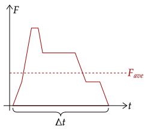
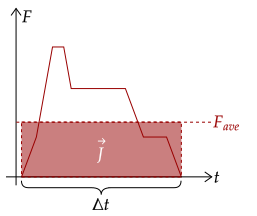
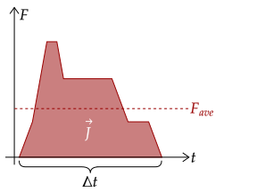
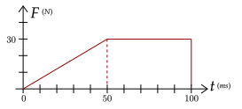
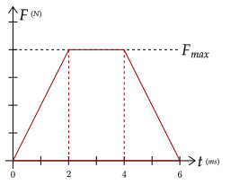

In the previous tutorial, we approximated the force over a certain time via using the average force, as we noted before that force over a period of time may not be constant.
We also saw the first example of a force-time graph, which is shown below as well.

A force-time graph shows the strength of a force over the period of time wherein the force is applied. Usually, it is highest at the point of collision and drops down heavily.
Here, let's focus on one definition of the impulse, which is the average force times the duration of the force.
In the force-time graph above, we have the duration of the force Δt labeled. If we set this as the length of time, we can set the value of the average force as the height, meaning that impulse is technically the area of the rectangle shown.

Of course, as we said before, the average force is just an approximation for the non-constant force on an object. If we extend this fact that the impulse is this "area under the force", we get this graph of the impulse.

From this notion, we can see that the impulse is the area under the graph of the force. While usually we won't have a force-time graph, it is useful to note this fact in some cases.
Exercise 1
(LSM P9.32) The x-component of a force on a 46-g golf ball by a 7-iron versus time is plotted in the figure below. Find the x-component of the impulse during the intervals 0ms to 50ms and 50ms to 100ms.

Solution
We will use the definition of impulse as the area under the graph of force over time. From 0ms to 50ms, we have a triangle of a base of 50ms (or 0.05s) and a height of 30N, which gives us 0.75N⋅s.
The other interval, from 50ms to 100ms, is a rectangle with a length of 50ms (or 0.05s) and a height of 30N, which gives us 1.5N⋅s.
Exercise 2
(HRK E6.9) The figure below shows an approximate representation of force versus time during the collision of a 58-g tennis ball with a wall. The initial velocity of the ball is 32 m/s perpendicular to the wall; it rebounds with the same speed, also perpendicular to the wall. What is the value of the maximum contact force during the collision?

Solution
Since impulse is the area under this graph, we have this equation, recalling the other quantity for impulse, which is the mass times the change the velocity.
For the area, we will use geometry. The graph forms a trapezoid, with bases of 6ms and 2ms, or in seconds, 0.006s and 0.002s. Using the formula, we have this.
Since the ball rebounds (meaning it changes direction), we have a change in velocity of 64m/s. We now place it all into the equation.